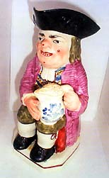
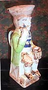
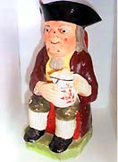
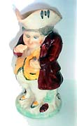

|
Where Have All The Tobys Gone?
Article by Ron Earl
My recently published book, Toby Jug-The
Most Underestimated Antique! has already created frantic
waves of people searching their attics and cupboards for the
elusive Jug.
Everybody claims to have at least one, but on further questioning
the one usually turns out to be a seaside holiday jug or at best,
although quite collectable, a Royal Doulton Character Jug. Although
there are a few Doultons capable of realising big sums, most
Character Jugs can be bought for between £70-£200.
The absence of the real Toby has become quite apparent, a viewpoint
which I personally have held for a few years.
|
A 1870 cross legged Toby similar to this will
usually cost around £150.00. If Longton 1850 is impressed
on base expect to pay up to £350.00. |
For this level of investment, say £150-£200, a nice
late Victorian Toby can be purchased, and may probably still be
intact with his detachable crown.
But let us go back to 1760 when the first Tobys emerged. A good
Ralph Wood can be bought for £1,500. If it has the mould number
on the base maybe it will fetch £1,800. If it is signed or
has the Burslem mark you may well be looking at £2,500+. These
jugs with their attractive running glazes are now very sought after.
When did you last see one for sale? The enamelled Toby from say
1800-1830 may well fetch up to £1,100 for a good specimen.
I would say a good specimen without major repair or replacement
hands etc, but maybe some minor cracking or small chips are quite
acceptable in Toby Jugs of this age. They probably have had a hard
life.
|  |
1830-1870 sees Jugs fetching around £400-£800 depending on quality, a Walton Jug with a nice
factory mark will fetch more as will a good Davenport with
its anchor mark on and date. Any genuine mark which will help
to identify a pottery or potter will always enhance the price.
A very nice Faience Jug, probably about 1890, this will cost
in the region of £700-£800. |
French Faience jugs tend not to be so collectable, but a nice specimen,
say 1890-1910 can fetch up to £800. One major difference
with faience jugs is that they always carry considerable detail
on the base regarding the artist and pottery, amongst other things,
unlike 90% of Staffordshire and Yorkshire jugs which are generally
unmarked. A nice impressed crown on a good Yorkshire may well add
£200-£300 pounds to its value.
The Jug sporting the dark blue coat dates from around 1880 and
if in good condition can be bought for about £130. The Jug
with the light blue coat dates from around 1830 and would cost anything
between £500-£800 depending on condition.

The Jug wearing the green coat is The Thin Man. He pre-dates most
Tobys being potted in 1770. A Thin Man can fetch up to £5000
if unrestored and in fine shape. The Jug with the floral coat is
a good example of a Prattware, 1830 and would cost around £700
for a good specimen.
I am totally convinced that the current interest in Toby Jugs will
cause a spectacular rise in their value. Many are being exported,
some get broken, there will never be enough to satisfy demand.
I confidently predict a rise in their value over the next few years
by as much as 80%. They must be a good investment, but look after
them, keep them behind glass and don't keep washing them in hot
detergents-beware.

A fine enamelled-finished jug about 1840, with good floral decoration,
with a puce coloured coat, would cost about £500-£600.
He has a well painted face and pock marks, which are well defined.
The other illustration shows an early snuff taker (a variation to
the Ordinary Toby), and would fetch about £250-£350
for this 1840 specimen.
I am certain that Toby Jugs and their variants, (Martha Gunn,
The Gin Lady, The Snuff Taker, Heart Goodfellow, the Cross Legged
Jolly Miller), would be of historical interest to all those interested
in the world of ceramics. When one considers the bottle-kiln firing
which was available in 1790, for example, with no electric thermostats
or modern technology, it is a wonder so many beautiful jugs were
so well made and have existed to this very day.
I would be very pleased to hear from any readers of Ceramics Today
who can help me into my research on Tobys and their makers. Email:
REarl14@aol.com.
Article courtesy of Ron Earl. © 2004.
More Articles
|